Home
Famous Places
Check-in
Rides
Emergency
Famous Places
Famous Places in Cumilla
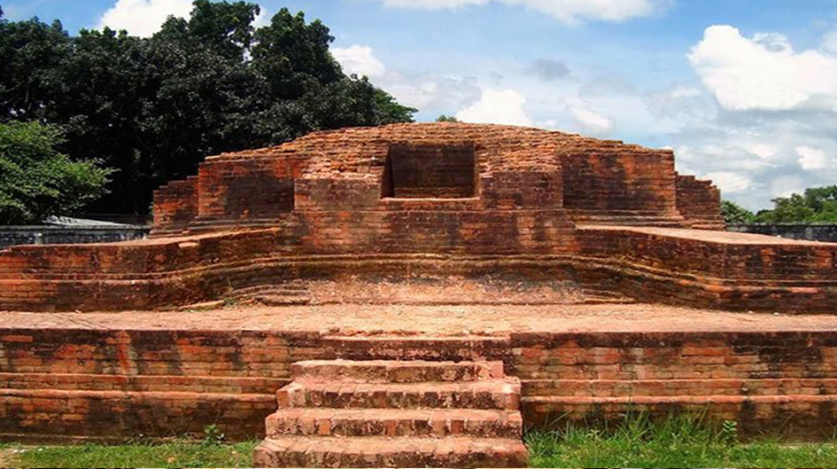
Shalbon Bihar
Moynamoti war cemetry
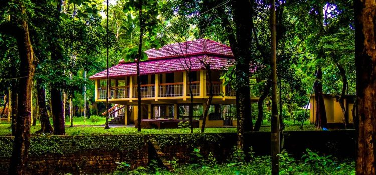
বাংলাদেশ পল্লী উন্নয়ন একাডেমী (বার্ড)
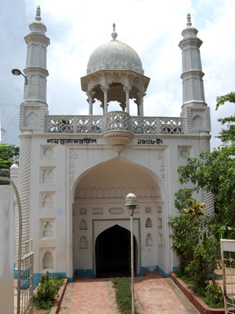
শাহ সুজা মসজিদ
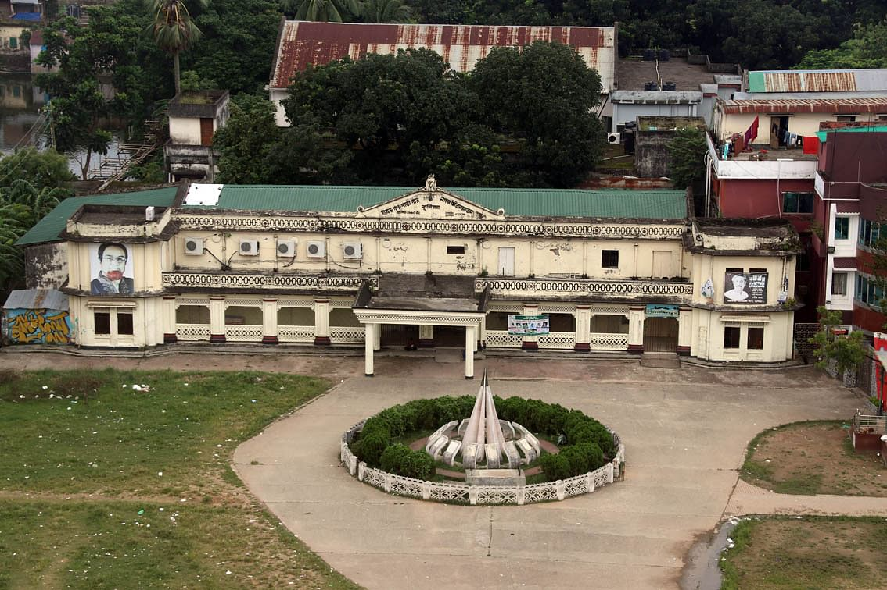
বীরচন্দ্র গণপাঠাগার ও নগর মিলনায়তন
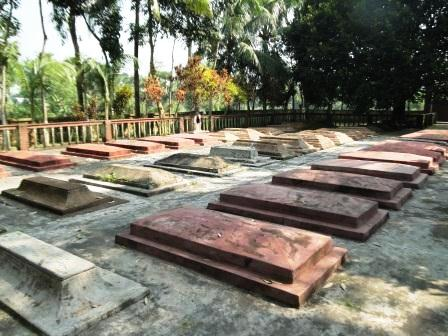
উটখাড়া মাজার
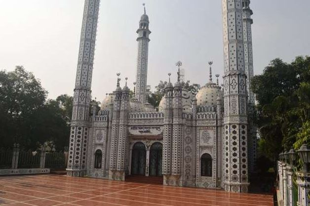
বায়তুল আজগর জামে মসজিদ
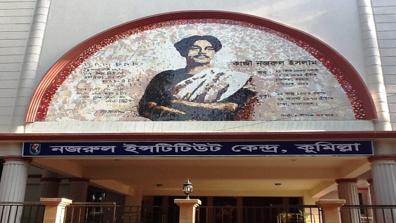
কবি তীর্থ দৌলতপুর (জাতীয় কবি কাজী নজরুলের স্মৃতি বিজড়িত স্থান)
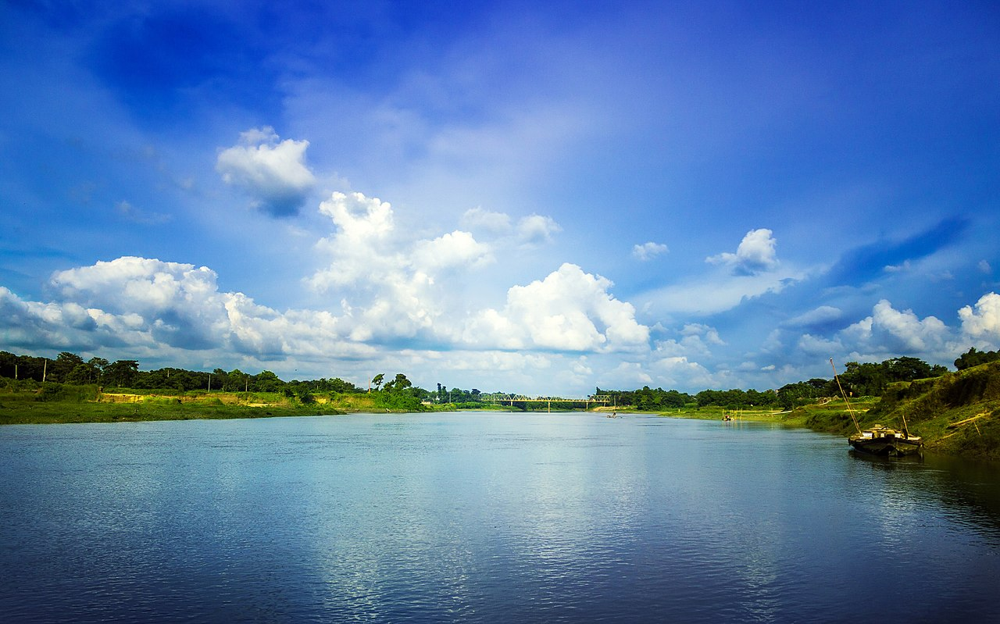
গোমতী নদী
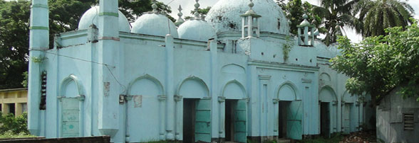
নূর মানিকচর জামে মসজিদ
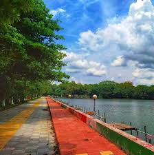
ধর্মসাগর
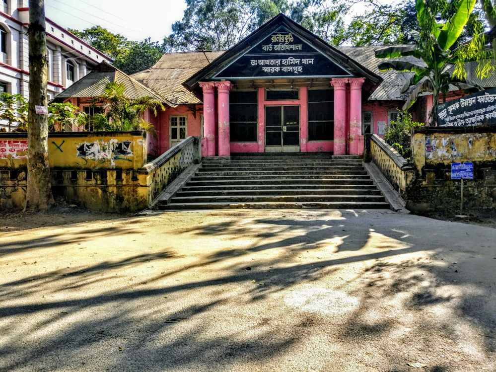
ranir kutir